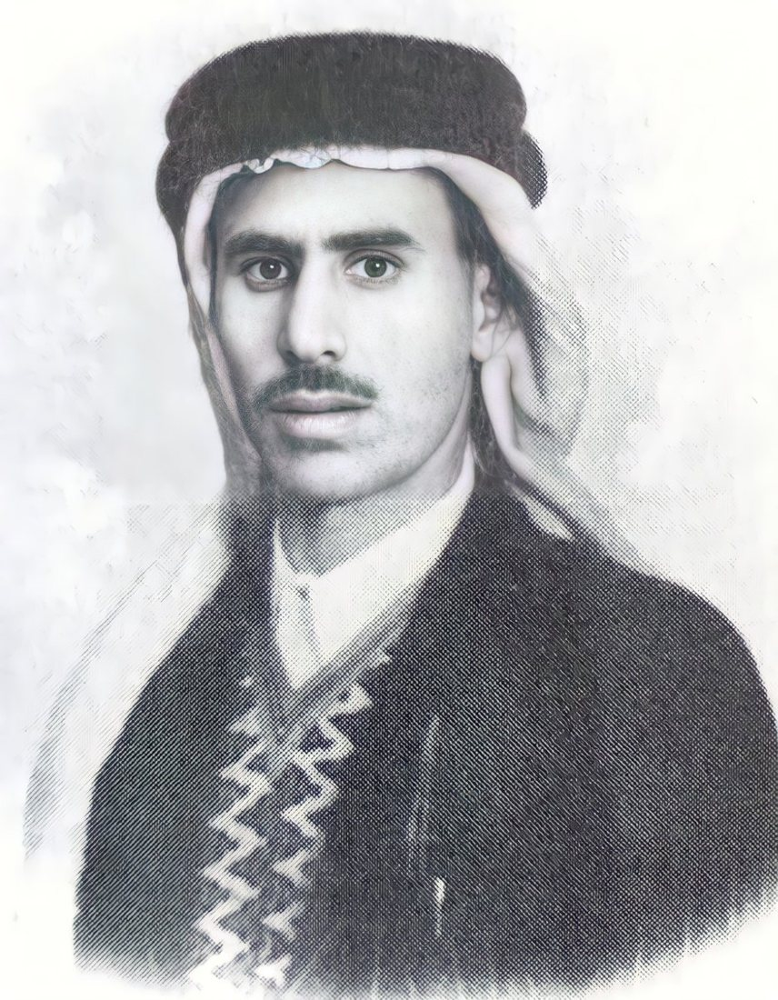
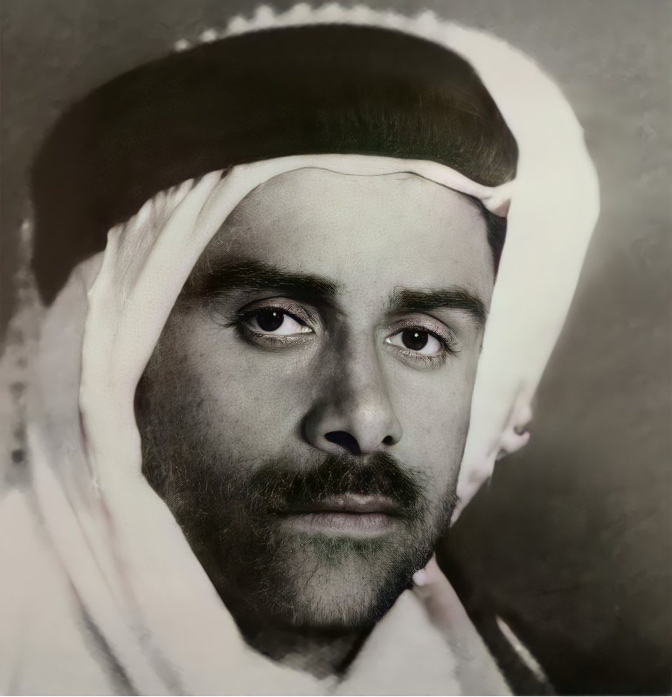
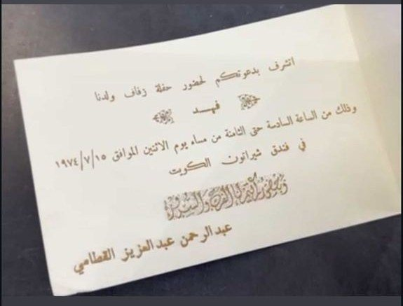

الثلاثينيات إلى ١٩٩٥
عبدالرحمن وعبدالله ومحمد أبناء عبدالعزيز
ركب عبدالرحمن البحر لإصرار والده عليه، وفي أولى رحلاته جنحت سفينته قرب الساحل الإيراني وجاءه قراصنة من البلوش، فتركهم يرفعون التمر حتى ارتفع المد فقطع حبال المرساة وأبحر. وترك قيادة السفن عام ١٩٣٧ إلى عمل حر في بلده، وقال للحجي عام ١٩٩١: «البحر أحيانا مثل القيامة». وتوفي عام ١٩٩٥.
وتدرب عبدالله على يد ابن عمه عبدالوهاب بن عيسى في «ابن رشدان»، وقاد السفن من بداية الثلاثينيات حتى أواخر الأربعينيات. وفي موسم ١٩٣٨ و١٩٣٩ أبحر إلى أفريقيا الشرقية برفقة صديقه النوخذة علي النجدي، وهي الرحلة التي وثقها فاليرز في «أبناء السندباد». وغرقت سفينته بعد اصطدام باخرة بها عام ١٩٤٠ وسلم هو وبحارته. وتوفي في منزله في أبريل ١٩٩٥.
وقاد محمد بوم العائلة «الحصان» إلى براول عام ١٩٣٦ وإلى منكرور عام ١٩٣٨، حتى عين في جمرك الكويت البحري، ويذكره ابن أخيه صقر بأنه أول رئيس لقوة خفر السواحل سنة ١٩٣٨. واشتهر بالسياسة أكثر منه نوخذة، وفي سنة المجلس عام ١٩٣٩ فقد حياته في أحد أسواق الكويت. وكان أخوه عبدالوهاب، وهو يومها على «الداو»، ينصحه: «إن القطامي أهل بحر وليسوا أهل سياسة». وصعد نواخذة الكويت في مسقط واحدا بعد الآخر إلى سفينة عبدالله يعزونه، وقال عبدالله: «ياليت أخي محمد لم يترك السفر ولا قيادة السفن».



وثائق هذا الجزء
المصادر
- الحجي، نواخذة السفر الشراعي، ص ٥٧ إلى ٦٢
- معالم مدينة الكويت القديمة، الجزء السابع، ص ٤٢ و٤٣ (بيت وديوان القطامي، القسيمة ٤٢)، والحاشيتان ١٩ و٢٠